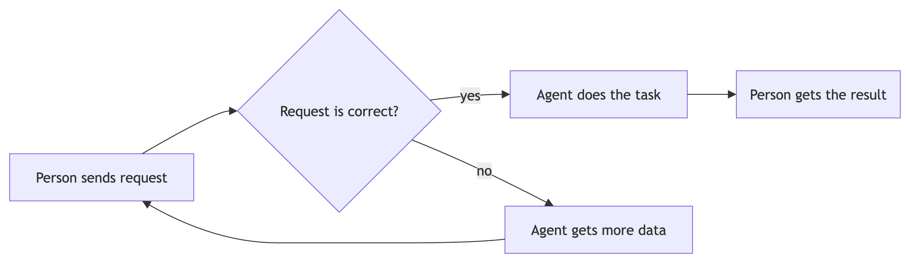

The counts a reader wants before reading anything else.
The default replacement for an A --> B --> C flowchart.
1 level deeper = waits for the step above. A dashed row = steps that can run at the same time.
Start value, signed deltas, resulting total — heights are inline percentages.
Magnitudes on one scale — cheaper to read than a pie.
Actor × stage — replaces a flowchart full of subgraphs.
/api/cash-flow
Architecture as tiers; .stack.up / .stack.both flip the arrows.
Risk, or effort × value — same 2×2.
Use instead of a Gantt whenever there are no real durations.
Replaces every trivial dependency flowchart. Fan-out reads fine too.
%%{init}%% block.
A branch and a loop: this one earns the graph. Built with scripts/diagram.py. Click to zoom.
Four dev-days of slack — any scope growth lands on the support reserve.
The migration window sits mid-rollout — weeks 1 and 4 are buffer.
components.json fits — but never
fall back to a diagram because no component matched. Contract and worked
examples: references/custom-components.md.